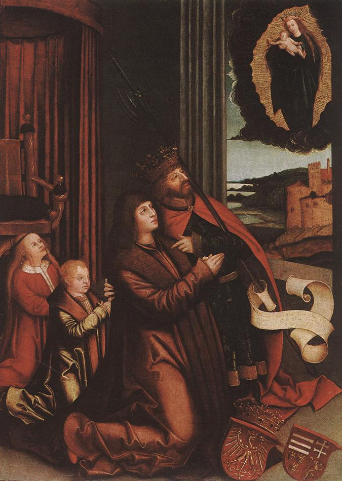
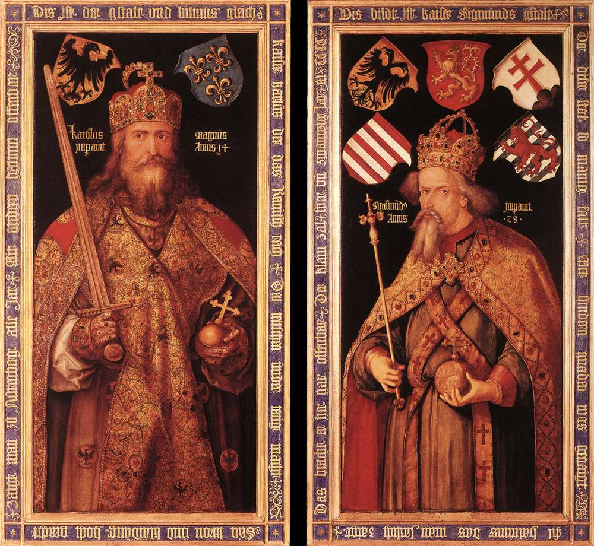
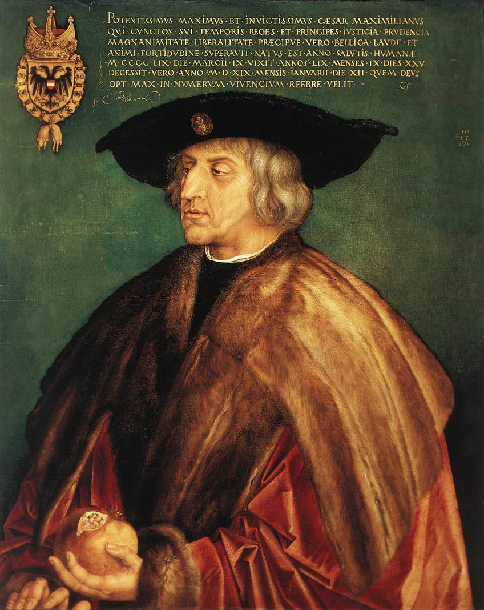

Heraldiek in de schilderkunst
In de schilderkunst maakte men graag gebruik van heraldische attributen, bijvoorbeeld om duidelijk te maken wie de geschilderde persoon is.

Strigel Bernhard (1460-1528 Memmingen), "StLadislas presents Wladislav II and his sons to the Virgin" 1511-12, wood 43x30.8cm, Museum of Fine Arts Budapest
The coat-of-arms at the lower right part of the painting refer to the family of the king (that with the Polish crowned eagle) and the most important countries of the king (Hungary, Dalmatia, Bohemia).
The painting represents an interesting transition between an idealized portrait and a religious picture.

Emperor Charlemagne and Emperor Sigismund, c.
1512
Oil and tempera on panel, 215 x 115 cm (each, including frame)
Germanisches Nationalmuseum, Nuremberg
Dürer's only commission for panel paintings from Nuremberg's city council was for a pair of portraits of the Emperors Charlemagne and Sigismund. These were ordered for the Treasure Chamber in the Schopper House, where the imperial regalia were kept the night before they went on ceremonial display on the Friday after Easter. For the rest of the year the regalia were housed in the Church of the Hospital of the Holy Ghost. Dürer was probably commissioned for the portraits in 1510 and received his final payment three years later. His panels are believed to have been ordered to replace two earlier works, now lost, which had been painted soon after the regalia were brought to Nuremberg in 1424.
The half length pictures are larger than life. No likenesses are known of Charlemagne, who ruled from 800-14, and Dürer therefore invented his portrait, presenting him frontally in an imposing posture. His interpretation of Charlemagne's appearance was to influence depictions of the Emperor until well into the nineteenth century. For Sigismund, who ruled from 1410-37, Dürer must have had access to a portrait done during his reign.
The two paintings include the appropriate coats of arms, the German eagle and French fleur-de-lis for Charlemagne and the arms of the five territories ruled by Sigismund, the German Empire, Bohemia, Old and New Hungary and Luxembourg. Inscriptions name the two men and state the number of years they ruled, 14 years for Charlemagne and 28 for Sigismund. Around the four sides of the panels are explanatory texts on the frames. The first records: `Charlemagne reigned for 14 years. He was the son of the Frankish King Pippin, and Roman Emperor. He made the Roman Empire subject to German rule. His crown and garments are put on public display annually in Nuremberg, together with other relics.' On the second panel is the text: `Emperor Sigismund ruled for 28 years. He was always well-disposed to the city of Nüremberg, bestowing upon it many special signs of his favour. In the year 1424, he brought here from Prague the relics that are shown every year.'
Although the two panels were originally designed as a diptych, they were ultimately displayed separately. Other texts on the reverse of the panels suggest that the painted side was normally hung facing the wall, with the portraits only being shown on special occasions, presumably for the annual display of the regalia. The two panels were hung on either side of the shrine in which the relics were housed.
Dürer prepared studies of the individual pieces of the regalia and reproduced them with great accuracy. Charlemagne wears the imperial crown and brandishes his sword and orb. Sigismund has a Gothic crown and holds a sceptre and orb. The annual display of the imperial regalia ended in 1525 and Dürer's panels were then moved to the city hall. Since 1880 they have been on loan to the Germanisches Museum in Nuremberg. As for the regalia, the Habsburgs later took them to Vienna where they remained in the imperial treasury, except for a brief period when they were seized by the Nazis and returned to Nüremberg.

Emperor Maximilian I , 1519
Oil on lindenwood, 74 x 62 cm
Kunsthistorisches Museum, Vienna
Maximilian I of Austria (1459-1519) became head of the Habsburgs in 1493 and was elected Holy Roman Emperor in 1508. He was a learned ruler with a strong interest in the arts. Dürer first met him during a visit to Nüremberg in 1512 and was commissioned to work on the gigantic woodcuts of The Triumphal Arch and The Triumphal Procession, as well as decorations for Maximilian's prayer book. In 1515 he was awarded an annual payment of 100 florins by the Emperor.
On 28 June 1518 Dürer had sketched Maximilian during the Imperial Diet at Augsburg. He inscribed the drawing: `This is Emperor Maximilian, whom I, Albrecht Dürer, portrayed up in his small chamber in the tower at Augsburg on the Monday after the feast day of John the Baptist in the year 1518. In the relatively informal sketch Dürer captured a hint of the fatigued resignation of the 59 year-old ruler.
Maxmilian I died on 12 January 1519 and Dürer then used his drawing as the basis for a woodcut and two painted portraits, one in tempera (Germanisches Nationalmuseum, Nuremberg) and this one in oil. These finished works are formal portraits and lack some of the human character which comes out in the original sketch. In the oil portrait, the Emperor is dressed in an elegant fur, which Dürer has painted with great care. Instead of an orb, the Emperor holds a broken pomegranate, a symbol of the Resurrection and Maximilian's personal emblem. At the top of the picture is the Habsburg coat of arms with the double-headed eagle and a lengthy inscription on Maximilian's achievements. The Emperor looks aloof and withdrawn, an expression of his dignity.

Johanna de Waanzinnige wachtend op de opstanding van haar man Filips de Schone, 1836, olie op doek, 3.20x3.70, Charles-Guillaume-Henri-François-Louis, baron von Steuben (Bauerbach (D) 1788-Parijs 1856) (uit de cataloog bij de tentoonstelling "Van Delacroix tot Courbet" in het Koninklijk Museum voor Schone Kunsten Antwerpen in 2004.)